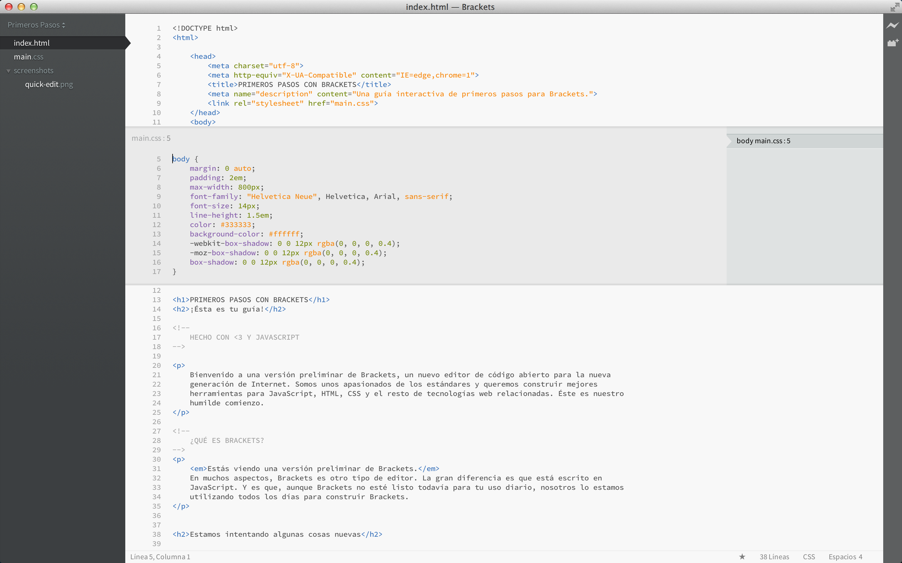

Bienvenido a una versión preliminar de Brackets, un nuevo editor de código abierto para la nueva generación de Internet. Somos unos apasionados de los estándares y queremos construir mejores herramientas para JavaScript, HTML, CSS y el resto de tecnologías web. Éste es nuestro humilde comienzo.
Brackets es un editor diferente. La gran diferencia es que está escrito en JavaScript, HTML y CSS. Esto significa que la mayoría de quienes usan Brackets tiene las habilidades necesarias para modificar y extender el editor. De hecho, nosotros lo usamos todos los días para desarrollar Brackets. También tiene algunas características únicas como Edición Rápida, Desarrollo en Vivo y más que no encontrarás en otros editores. Sigue leyendo para saber más sobre cómo sacar provecho de estas características
Se acabó el estar saltando de documento en documento perdiendo de vista lo que estás haciendo. Mientras estás escribiendo HTML, usa el atajo de teclado Cmd/Ctrl + E para abrir un editor rápido en línea con todo el contenido CSS relacionado. Ajusta tu CSS y oprime ESC para volver a tu HTML, o simplemente mantén las reglas CSS abiertas para que pasen a formar parte de tu editor de HTML. Si pulsas ESC fuera de un editor rápido, todos se cerrarán a la vez.
¿Quieres verlo funcionando? Coloca tu cursor sobe la etiqueta y oprime Cmd/Ctrl + E. Deberías ver aparecer un editor rápido de CSS más arriba. A la derecha verás un listado de todas las reglas CSS relacionadas con esta etiqueta. Simplemente desplázate entre las reglas con Alt + Arriba/Abajo para encontrar la que quieres modificar. Puedes usar el mismo atajo en JavaScript para ver el cuerpo de una función colocando el ratón sobre el nombre de la llamada a la función que quieras examinar. Por ahora, no se pueden anidar editores en línea, por lo que sólo puedes usar la característica de Edición Rápida cuando el cursor está en un editor "completo".
¿Conoces ese baile de "guardar/recargar" que llevamos años haciendo? ¿Ése en el que haces cambios en tu editor, oprimes guardar, cambias al navegador y recargas para por fin poder ver el resultado? Con Brackets, ya no tienes que hacerlo.
¡Brackets abrirá una conexión en vivo con tu navegador local y le enviará los cambios en el archivo HTML y CSS conforme escribas! Puede que ya estés haciendo algo parecido con las herramientas de desarrollo del navegador, pero con Brackets ya no necesitas copiar y pegar el código final de vuelta a tu editor. ¡Tu código se ejecuta en el navegador, pero vive en tu editor!
Brackets te ayuda a ver cómo los cambios en HTML y CSS afectan a tu página. Cuando tu cursor se encuentre sobre una regla de CSS, Brackets resaltará todos los elementos afectados en el navegador. Del mismo modo, cuando estés editando un archivo HTML, Brackets también resaltará los elementos correspondientes en tu navegador.
Si tienes instalado Google Chrome, puedes probarlo tú mismo. Haz click sobre el icono del rayo de la esquina superior derecha o presiona Cmd/Ctrl + Alt + P. Cuando Desarrollo en Vivo está funcionando en un documento HTML, todos los documentos CSS relacionados se pueden editar en tiempo real. El icono pasará de gris a dorado cuando Brackets consiga establecer una conexión con tu navegador. Ahora, coloca el cursor sobre la etiqueta que se encuentra un poco más arriba. Observa cómo aparece el resaltado azul alrededor de la imagen en Chrome. Luego, utiliza Cmd/Ctrl + E para abrir las reglas de CSS existentes. Intenta cambiar el tamaño del borde de 1 a 10 píxeles o el color del fondo de "dimgray" a "hotpink". Si Brackets y tu navegador están funcionando en paralelo, verás los cambios reflejados de manera instantánea en tu navegador. Genial, ¿verdad?Actualmente, Brackets sólo soporta Desarrollo en Vivo para HTML y CSS. Aún así, en la versión actual, los cambios en ficheros JavaScript son detectados y recargados automáticamente en el navegador cuando guardas. En estos momentos estamos trabajando en añadir soporte para Desarrollo en Vivo para JavaScript. Además, las actualizaciones automáticas sólo son posibles en Google Chrome, pero esperamos poder trasladar próximamente esta funcionalidad a todos los grandes navegadores.
Para aquellos que todavía no han memorizado las equivalencias de color entre Hex y RGB, Brackets permite ver exactamente qué color se está utilizando rápida y fácilmente. Tanto en CSS como en HTML, simplemente mueve el cursor sobre cualquier valor de color o gradiente y Brackets mostrará una previsualización del mismo de manera automática. Lo mismo sirve para imágenes: simplemente pasa el cursor sobre la dirección de una imagen en Brackets, y éste mostrará una vista en miniatura de la misma.
Para probar la previsualización tú mismo, coloca el cursor en la etiqueta al principio de este documento y oprime Cmd/Ctrl + E para abrir un editor CSS. Ahora, simplemente mueve el ratón sobre cualquiera de los colores dentro del CSS. También puedes verlo funcionando en gradientes abriendo un editor de CSS en la etiqueta pasando el cursor por cualquiera de los valores para las imágenes de fondo. Para probar la vista previa de imágenes, coloca el cursor sobre la imagen con la captura de pantalla incluida antes en este documento.Brackets es un proyecto de código abierto. Desarrolladores web de todo el mundo están contribuyendo a construir un mejor editor de código. Haznos saber lo que piensas, comparte tus ideas o contribuye directamente al proyecto.